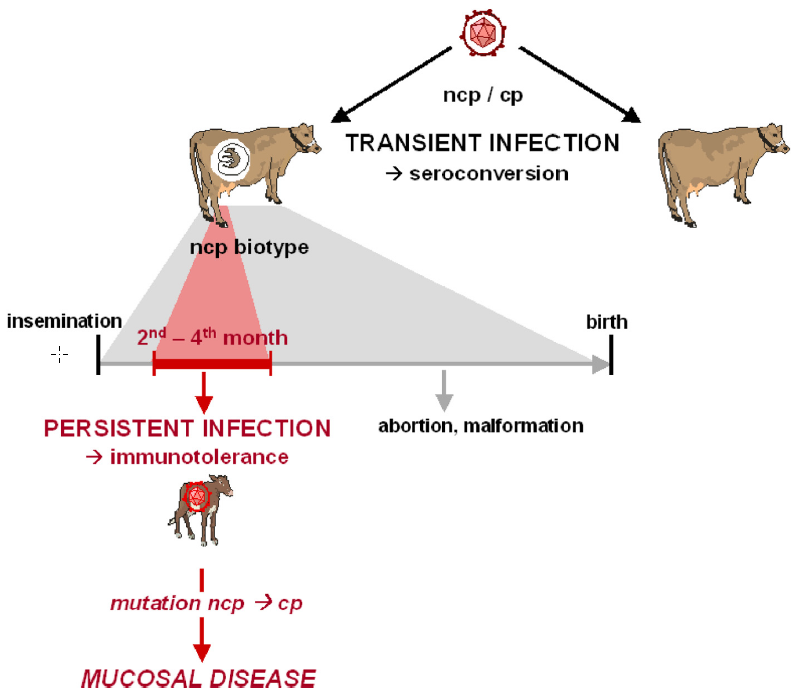
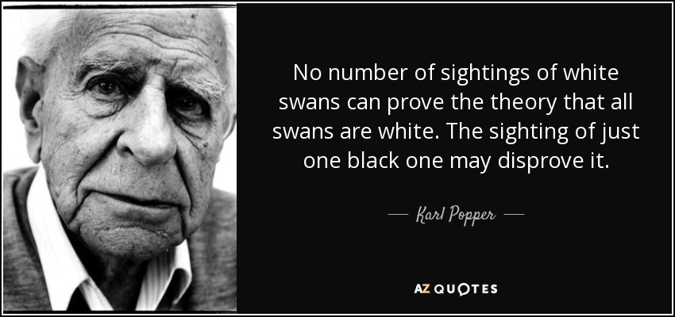
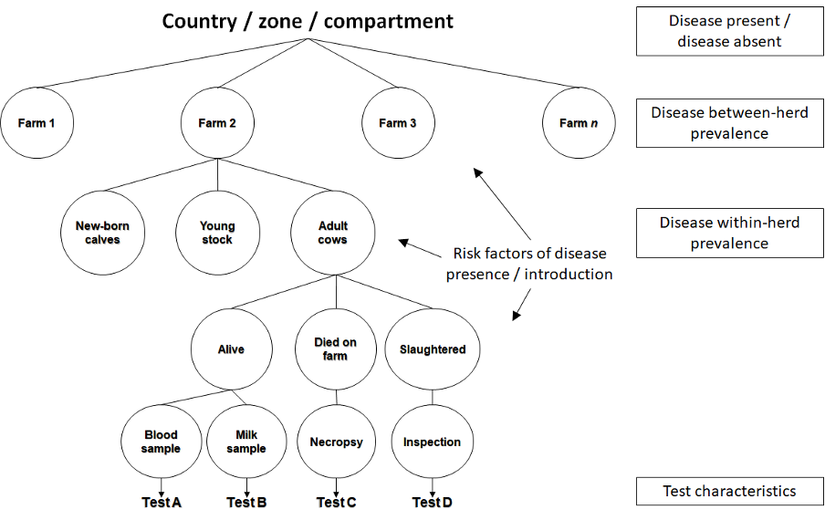
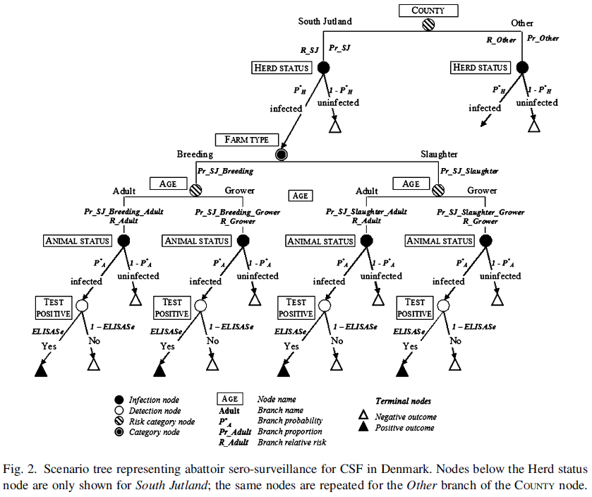
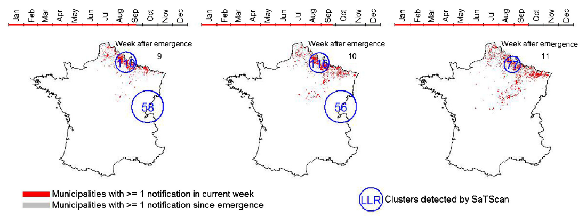
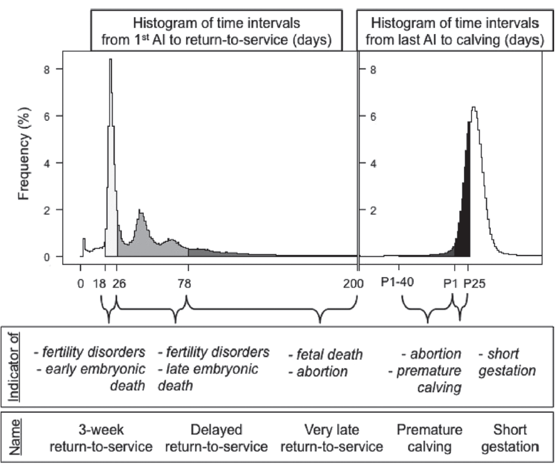
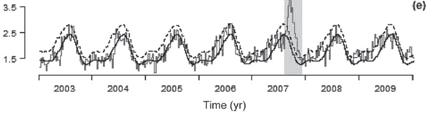

Oniris VetAgroBio
2024-10-31
Link to the slides: https://aurmad.github.io/epidemiologic_surveillance/
Epidemiologic surveillance is the ongoing and systematic collection, analysis, and interpretation of health data in the process of describing and monitoring a health event. This information is used for planning, implementing, and evaluating public health interventions and programs. Surveillance data are used both to determine the need for public health action and to assess the effectiveness of programs. (Klaucke et al., 1988)
Animal health surveillance: The systematic (continuous or repeated) measurement, collection, collation, analysis, interpretation, and timely dissemination of animal-health and -welfare data from defined populations. These data are essential for describing health-hazard occurrence and to contribute to the planning, implementation, and evaluation of risk-mitigation actions. (Hoinville et al., 2012)
2 types of infected animals:
 Figure from Peterhans et al. (2010).

Proving the absence of an infection would require testing every susceptible animal with a perfect test \(\rightarrow\) a practically impossible task.
Evaluation strategy:


A real-time (or near real-time) collection, analysis, interpretation, and dissemination of health-related data to enable the early identification of the impact (or absence of impact) of potential human or veterinary public health threats that require effective public health action.
Syndromic surveillance is based not on the laboratory-confirmed diagnosis of a disease but on non-specific health indicators including clinical signs, symptoms as well as proxy measures (e.g., absenteeism, drug sales, animal production collapse) that constitute a provisional diagnosis (or “syndrome”).
Important measures:
Evaluation challenge: There is no gold standard since emerging pathogens are usually unknown.
Solution to design and evaluate a surveillance system:
Example from a research project.
Objective: Use routinely collected production and reproduction data in cattle for the early detection of the emergence of vector-borne infectious diseases.
Data:
Design and validation of the system on data collected during the emergence of the Bluetongue Virus (BTV) in France in 2007
Milk yields from milk recording aggregated at the test-day level: dates when all the cows from a herd were recorded
Mean milk production per cow per test-day computed
Historical period (before emergence):
Periods of possible emergence:


Indicators aggregated at the département-week level
Modelling of times series before the emergence
Prediction of indicator values during the emergence
Main result: BTV emergence led to a slight increase in short gestations (percentiles 1 to 25 of the distribution).

Case detection \(\rightarrow\) sensitivity
Early detection \(\rightarrow\) timeliness
False positives:
Based on aims and cost of surveillance
Individual or pooled data
Detect ongoing infections (antigen, DNA, RNA)
Detect past infections (antibodies)
Detect non-specific signs of disease
Surveillance programmes can be complex: